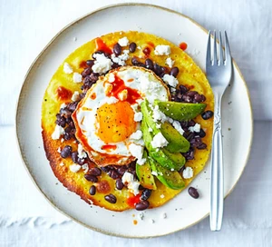

Easy Huevos Rancheros recipe

An easy Mexican breakfast that'll keep you going all morning, it's got everything you need to pep up your plate
Ingredients
- 1 tbsp vegetable oil or sunflower oil
- 1 corn tortilla wrap
- 1 egg
- 200g can black beans, drained
- juice ½ lime
- ½ ripe avocado, peeled and sliced
- 50g feta, crumbled
- hot chilli sauce (we like sriracha)
Steps to follow:
- Preheat an outdoor grill for medium-high heat.
- Combine ground sirloin, onion, grill seasoning, liquid smoke, Worcestershire sauce, garlic, adobo sauce, and chipotle pepper in a large bowl. Form the mixture into 6 patties. Season with salt and pepper.
- Place burgers on preheated grill and cook until no longer pink in the center. Place a slice of Cheddar cheese on top of each burger one minute before they are ready. Place burgers on buns to serve.